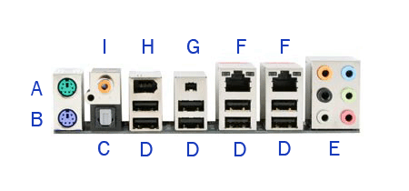

Computer Laboratory Manual
Home
First Year
Second Year
Third Year
Fourth Year
SUBJECTS
Introduction to computing
Computer Programming
Data Structure and Algorithms
ACTIVITIES
ACT1
ACT2
ACT3
ACT4
ACTIVITY 3
And now list down all the ports of motherboard.
After all the ports are listed, the pc parts can be
returned to check if they are positioned correctly.
